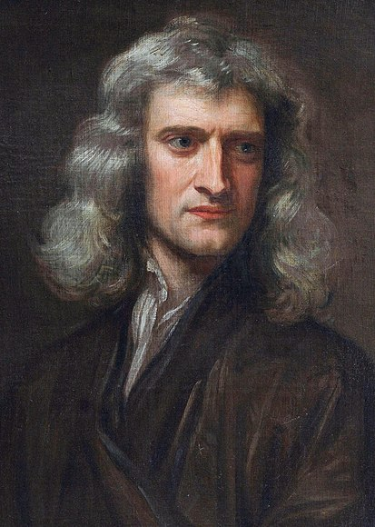
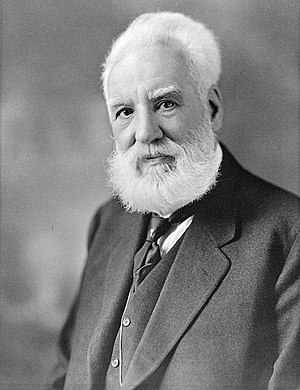
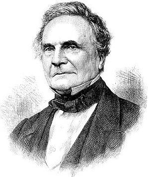

Great Britain gave us many scientists and inventors, without whom scientific progress today would not be possible. In the world of modern technology, each of us uses various technologies without knowing anything about their inventors. New discoveries and achievements began to be perceived as a matter of course, rather than a unique phenomenon. However, it is not known how we would use electricity, computers and the World Wide Web today, if they had not been introduced, among which English inventors take pride of place. Their ranks include Isaac Newton and Alexander Bell, Charles Babbage and others.
Sir Isaac Newton
The great English scientist Isaac Newton is best known to the world as an outstanding physicist and mathematician. The name of this brilliant Briton is associated with many of us, first of all, with the law of universal gravitation. However, Newton's scientific works are widely used not only in the field of physics, but also in astronomy. For example, many discoveries were made thanks to the reflecting telescope they invented. It was Newton who wrote down all the basic laws of classical mechanics, which are used by modern scientists. In addition, the inventor devoted a lot of time to his theological works, where he explained the meaning of biblical prophecies.

Alexander Graham Bell
We all owe the ability to call each other to the other side of the world to the great inventor from Scotland, Alexander Bell. At the end of the 19th century, a scientist created a receiver capable of transforming electricity into sound in a strange way. It is believed that such a device became the first prototype of the telephone. Bell's invention is disputed, and the telephone may have been created before him. But he was definitely the first to patent his discovery. Bell also worked on developing new methods for teaching people who are hard of hearing. In addition to everything else, Alexander Bell became one of the founders of the world-famous National Geographic magazine.

Charles Babbage
Charles Babbage was the same inventor who started building the world's first computer. Unfortunately, the computing machines of the 19th century did not have the necessary accuracy and power to complete the digital calculating machine project that Mr. Charles had begun. The computer scheme invented by Babbage was so close to reality that it can rightfully be called the forefather of modern laptops.

Sir Timothy John «Tim» Berners-Lee
In 1989, while working at CERN, Berners-Lee proposed a project known as the World Wide Web (WWW). The project aimed to publish hypertext documents linked by hyperlinks, which would facilitate the search and consolidation of information. The Web project was intended for CERN scientists and was initially used in the center's internal network. To implement the project, Tim Berners-Lee and his assistants developed URIs (and, as a special case, URLs), the HTTP protocol, and the HTML language. These technologies are the basis of the modern World Wide Web. Between 1991 and 1993, Berners-Lee refined the technical specifications of the standards and published them.
Richard Trevithick
R. Trevithick worked in the tin mines of Cornwall, where steam engines were used for drainage. He significantly improved them, creating a relatively light and powerful high-pressure machine (1802). From 1797 he built models of steam carriages, and in 1801 he began to build original models of carriages, the last of which passed successful tests in Cornwall and London (1802-1803). In 1803-1804, with the help of J. Steele, Trevithick built the first ever steam locomotive for the factory Merthyr-Tydville Railway (South Wales), which turned out to be too heavy for cast-iron rails and could not be used. The second steam locomotive of Trevithick and Steel was also not used, and only in 1808 Trevithick built a steam locomotive of a more advanced design, which developed a speed of up to 30 km/h; demonstrated it in the suburbs of London.